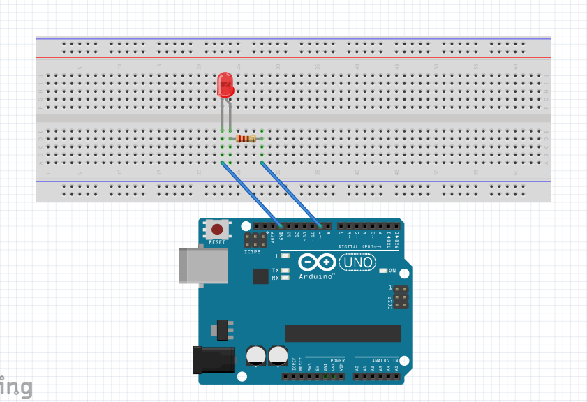

이 프로그램은 무엇을 하나요?
버튼이나 손잡이 없이 손동작만으로 불빛의 밝기를 조절하는 프로그램입니다. 브라우저에서 돌아가는 p5.js가 웹캠 영상에서 손가락 위치 21개를 찾아내고, 엄지와 검지가 얼마나 벌어졌는지를 0~100 값으로 바꿔 화면 왼쪽의 세로 슬라이더에 반영합니다. 이 값은 USB 시리얼 통신으로 아두이노에 전달되고, 아두이노는 그 값에 맞춰 LED를 어둡게 또는 밝게 켭니다.
사용 방법
화면의
아두이노 연결 버튼을 누르고 아두이노 포트를 선택합니다.가운데 손가락을 접으면 조절 모드가 켜지고 엄지와 검지 사이에 주황색 선이 나타납니다.
엄지와 검지를 벌리면 밝아지고, 붙이면 꺼집니다. 가운데 손가락을 펴면 값이 고정됩니다.
Fritzing 회로 설계

사용 부품
| 부품 | 수량 |
|---|---|
| Arduino Uno | 1 |
| 브레드보드 | 1 |
| 빨간색 LED | 1 |
| 220Ω 저항 | 1 |
| 점퍼선 | 2 |
| USB 케이블 | 1 |
연결
D9 (~PWM)→220Ω 저항→LED + (긴 다리)
LED − (짧은 다리)→GND
LED 밝기를 단계적으로 바꾸려면 analogWrite()가 되는 PWM 핀(~ 표시)에 연결해야 합니다. 저항은 LED에 너무 큰 전류가 흐르지 않게 막아 줍니다.
코드 설명
코드는 두 부분으로 나뉩니다. p5.js(브라우저)가 손을 인식해 값을 만들어 보내고, 아두이노가 그 값을 받아 LED를 켭니다. 둘은 "숫자\n"이라는 약속된 형식으로 대화합니다.
p5.js — 핵심 부분
① 조절 모드 판단 — isGrabMode()
손이 화면에 보이기만 해도 값이 바뀌면 불편하기 때문에, 가운데 손가락을 접었을 때만 조절되도록 했습니다. 손목(0번 점)에서 중지 끝(12번 점)까지의 거리가 손바닥 길이(0번 → 9번)보다 짧으면 손가락을 접은 것으로 판단합니다.
let palmLength = dist(ks[0].x,ks[0].y,ks[9].x,ks[9].y);
let grabDistance = dist(ks[0].x,ks[0].y,ks[12].x,ks[12].y);
if( grabDistance > palmLength ) return false;
return true;② 손가락 간격을 0~100으로 — getNormalizedDistance()
엄지 끝(4번)과 검지 끝(8번) 사이의 거리를 그대로 쓰면 손이 카메라에 가까울수록 값이 커집니다. 그래서 손바닥 길이로 나눈 비율(v/p)을 사용해 거리와 상관없이 같은 손 모양이면 같은 값이 나오게 했습니다. 손가락을 붙였을 때 약 0.25, 쫙 벌렸을 때 약 1.5가 나오므로 map()으로 이 범위를 0~100에 맞췄습니다.
let v = dist(a.x,a.y,b.x,b.y); // 엄지-검지 거리
let p = dist(c.x,c.y,d.x,d.y); // 손바닥 길이
let s = round(map(v/p, 0.25, 1.5, 0, 100));
return constrain(s,0,100);③ 부드럽게 따라가기 — draw()
손 인식 결과는 프레임마다 조금씩 흔들립니다. 그래서 슬라이더를 목표값으로 바로 옮기지 않고, 매 프레임 남은 거리의 30%씩만 다가가게 했습니다. 목표와의 차이가 1보다 작아지면 목표값을 그대로 넣어서 0과 100 끝까지 정확히 도달하게 했습니다.
let next = c + 0.3*(v-c); // 부드럽게 조정
if( abs(v-next) < 1 ) next = v; // 목표에 거의 도달하면 딱 맞춤
slider.value(next);④ 아두이노로 보내기 — connectArduino(), sendToArduino()
Chrome·Edge에 내장된 Web Serial API를 사용해 별도 라이브러리 없이 USB 포트에 연결합니다. 보안상 포트는 사용자가 버튼을 눌러야만 열 수 있어서 연결 버튼을 만들었습니다. 값이 바뀌었을 때만 "값\n" 형태로 보내 불필요한 전송을 줄였습니다.
port = await navigator.serial.requestPort();
await port.open({ baudRate: 9600 });
writer = port.writable.getWriter();
...
if( v == lastSent ) return;
writer.write(new TextEncoder().encode(v + '\n'));Arduino — 값 받아서 LED 켜기
Serial.readStringUntil('\n')으로 줄바꿈 문자까지 한 줄을 읽고, trim()으로 공백을 지운 뒤 toInt()로 숫자로 바꿉니다. 받은 0~100 값을 map()으로 PWM 범위인 0~255로 바꾸고 analogWrite()로 LED 밝기를 정합니다. 통신 속도 9600은 p5의 baudRate와 반드시 같아야 합니다.
String line = Serial.readStringUntil('\n');
line.trim();
int value = constrain(line.toInt(), 0, 100);
int brightness = map(value, 0, 100, 0, 255);
analogWrite(LED_PIN, brightness);전체 코드
sketch.js 파일 받기
let handPose, video, slider;
let hands = [];
let sliderValue = 50;
let connections;
let port, writer; // 아두이노 시리얼 연결
async function setup() {
createCanvas(640, 480);
slider = createSlider(0, 100, 50, 1);
slider.style('writing-mode', 'vertical-rl');
slider.style('height', '440px');
slider.style('width', '20px');
slider.style('transform: rotate(180deg)');
slider.position(10, 20);
slider.input(updateSliderValue);
let button = createButton('아두이노 연결');
button.position(50, 20);
button.mousePressed(connectArduino);
video = createCapture(VIDEO, {flipped:true});
video.size(640, 480);
video.hide();
handPose = await ml5.handPose({maxHands:1, modelType:'lite', flipped:true});
handPose.detectStart(video, gotHands);
connections = handPose.getConnections();
}
function draw() {
image(video, 0, 0, width, height);
drawSkeletons(hands);
drawKeyPoints(hands);
let adjustMode = isGrabMode(hands);
if (adjustMode) {
drawConnectedLine(hands);
let c = slider.value();
let v = getNormalizedDistance(hands);
let next = c + 0.3*(v-c); // 부드럽게 조정
if( abs(v-next) < 1 ) next = v; // 목표에 거의 도달하면 딱 맞춤
slider.value(next);
}
sendToArduino(slider.value());
}
function gotHands(results) {
hands = results;
}
function drawKeyPoints( hs) {
for (let i = 0; i < hs.length; i++) {
let hand = hs[i];
for (let j = 0; j < hand.keypoints.length; j++) {
let keypoint = hand.keypoints[j];
fill(255, 0, 0);
noStroke();
circle(keypoint.x, keypoint.y, 10);
}
}
}
function drawSkeletons(hs) {
for (let i = 0; i < hs.length; i++) {
let hand = hs[i];
stroke(0, 255, 0);
strokeWeight(2);
for (const [a, b] of connections) {
const start = hand.keypoints[a];
const end = hand.keypoints[b];
if (start && end) {
line(start.x, start.y, end.x, end.y);
}
}
}
}
// 가운데 손가락을 구부렸는지 확인
function isGrabMode(hs) {
if( hs == null ) return false;
if( hs.length == 0) return false;
let ks = hs[0].keypoints;
if( ks.length != 21 ) return false;
let palmLength = dist(ks[0].x,ks[0].y,ks[9].x,ks[9].y);
let grabDistance = dist(ks[0].x,ks[0].y,ks[12].x,ks[12].y);
if( grabDistance > palmLength ) return false;
return true;
}
function drawConnectedLine(hs) {
if(hs.length > 0) {
let hand = hs[0];
const a = hand.keypoints[4]; // 엄지 끝
const b = hand.keypoints[8]; // 검지 끝
stroke(255, 140, 0);
strokeWeight(4);
line(a.x,a.y,b.x,b.y);
noFill();
circle(a.x,a.y,22);
circle(b.x,b.y,22);
}
}
function getNormalizedDistance(hs) {
if(hs.length > 0) {
let ks = hs[0].keypoints;
const a = ks[4]; // 엄지 끝
const b = ks[8]; // 검지 끝
const c = ks[0]; // 손목
const d = ks[9]; // 중지 시작점
let v = dist(a.x,a.y,b.x,b.y); // 엄지-검지 거리
let p = dist(c.x,c.y,d.x,d.y); // 손바닥 길이
let s = round(map(v/p, 0.25, 1.5, 0, 100)); // 0.25: 붙였을 때, 1.5: 쫙 벌렸을 때
return constrain(s,0,100);
}
return 0;
}
function updateSliderValue() {
sliderValue = Number(slider.value());
}
// 버튼을 누르면 아두이노 포트 선택 후 연결
async function connectArduino() {
port = await navigator.serial.requestPort();
await port.open({ baudRate: 9600 });
writer = port.writable.getWriter();
}
// 값이 바뀌었을 때만 "값\n" 형식으로 전송
let lastSent = -1;
function sendToArduino(v) {
if( writer == null ) return;
if( v == lastSent ) return;
writer.write(new TextEncoder().encode(v + '\n'));
lastSent = v;
}led_brightness.ino 파일 받기
const int LED_PIN = 9; // PWM(~) 핀: 3, 5, 6, 9, 10, 11 중 하나
void setup() {
Serial.begin(9600);
Serial.setTimeout(50); // 한 줄 읽을 때 오래 기다리지 않도록
pinMode(LED_PIN, OUTPUT);
analogWrite(LED_PIN, map(50, 0, 100, 0, 255)); // 슬라이더 초기값 50과 맞춤
}
void loop() {
if (Serial.available() > 0) {
String line = Serial.readStringUntil('\n');
line.trim(); // \r, 공백 제거
if (line.length() > 0) {
int value = constrain(line.toInt(), 0, 100);
int brightness = map(value, 0, 100, 0, 255);
analogWrite(LED_PIN, brightness);
}
}
}실제 시연 영상
가운데 손가락을 접은 채로 엄지와 검지를 벌리고 오므리면, 화면의 슬라이더와 브레드보드의 LED 밝기가 함께 바뀝니다.
어려웠던 점과 고민
"createSerial이 정의되지 않았습니다" 오류
- 문제
- 시리얼 통신 함수
createSerial()을 썼는데 p5가 그런 함수가 없다는 오류를 냈습니다. - 원인
- 이 함수는 p5.js 기본 기능이 아니라
p5.webserial이라는 외부 라이브러리에 들어 있었는데,index.html에서 불러오지 않았습니다. C언어에서#include <stdio.h>없이printf를 쓴 것과 같은 상황이었습니다. - 해결
- 라이브러리 대신 브라우저에 내장된 Web Serial API(
navigator.serial)를 직접 사용하도록 바꿨습니다.
반응이 느리고 버벅거림
- 문제
- 손가락을 움직여도 슬라이더와 LED가 한참 뒤에 따라왔습니다.
- 원인
- 부드럽게 움직이게 하는 계수가
0.05로 너무 작아서, 한 프레임에 남은 거리의 5%만 이동했습니다. 손 인식 때문에 프레임 수까지 떨어지니 목표값까지 몇 초씩 걸렸습니다. - 해결
- 계수를
0.3으로 올리고, 손 인식 모델을 손 하나만 찾는 가벼운 모델(maxHands:1, modelType:'lite')로 바꿨습니다.
밝기 변화가 너무 민감함
- 문제
- 손가락을 조금만 벌려도 바로 최대 밝기가 되었습니다.
- 원인
- 처음 식
100*(v/p)-15는 비율이 1.15만 넘어도 100이 되었습니다. - 해결
map(v/p, 0.25, 1.5, 0, 100)으로 바꿔 손가락을 충분히 벌려야 100이 되도록 범위를 넓혔습니다.
슬라이더가 끝까지 가지 않음
- 문제
- 손가락을 끝까지 벌리거나 붙여도 슬라이더가 맨 위·맨 아래보다 조금 덜 갔습니다.
- 원인
- 슬라이더는 정수만 저장해서 소수를 반올림합니다. 예를 들어 99에서 100으로 가려 할 때 99 + 0.3 = 99.3이 다시 99로 반올림되어 제자리에 멈췄습니다.
- 해결
- 목표와의 차이가 1보다 작으면 목표값을 그대로 넣도록 했습니다. 0까지 안 가던 문제는 손 인식 점이 손가락 끝의 가운데에 찍혀서 붙여도 거리가 남는 것이 원인이라, 0의 기준을 0.15에서 0.25로 올려 해결했습니다.
느낀 점
코드가 오류 없이 돌아가는 것과 실제로 쓰기 편한 것은 전혀 다른 문제라는 것을 배웠습니다. 처음 코드도 동작은 했지만, 느리고 민감하고 끝까지 가지 않아서 손으로 조절하기 불편했습니다. 0.05, 0.15, 1.5 같은 숫자 하나하나가 사용하는 느낌을 크게 바꿨고, 직접 손을 움직여 보면서 값을 맞춰 가는 과정이 가장 오래 걸렸습니다.
또 화면 속 슬라이더 값과 실제 LED 밝기가 한 줄의 문자열 "57\n"로 연결된다는 점이 인상적이었습니다. 브라우저와 아두이노가 서로 다른 언어로 작성됐지만, 보내는 쪽과 받는 쪽이 같은 형식과 같은 통신 속도(9600)를 약속하면 소통할 수 있었습니다.